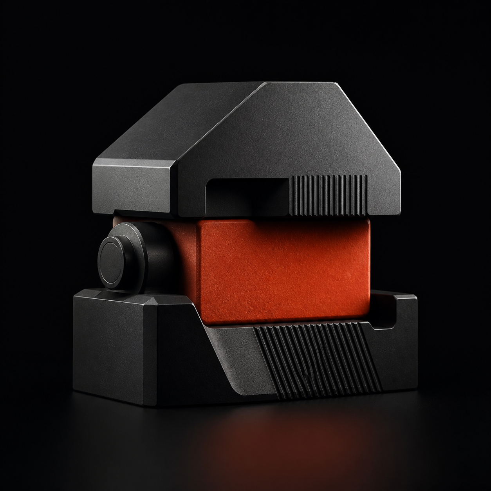
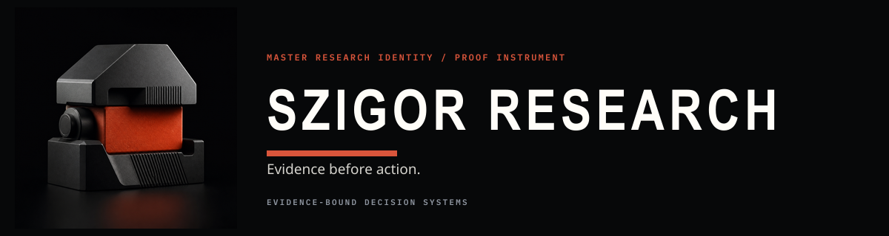
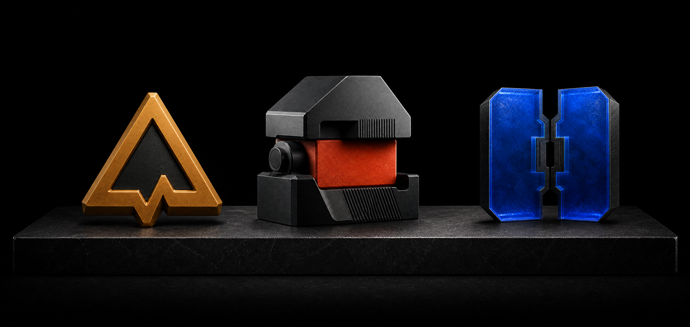
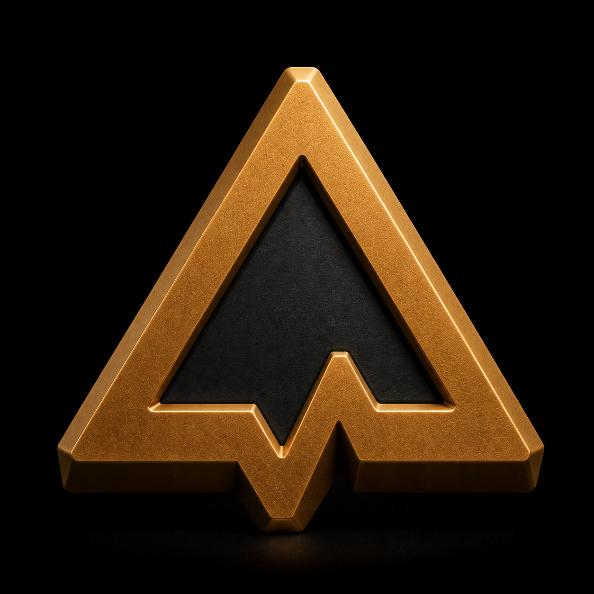
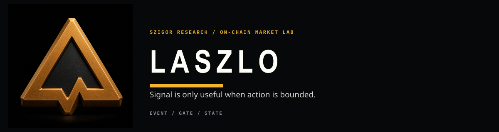
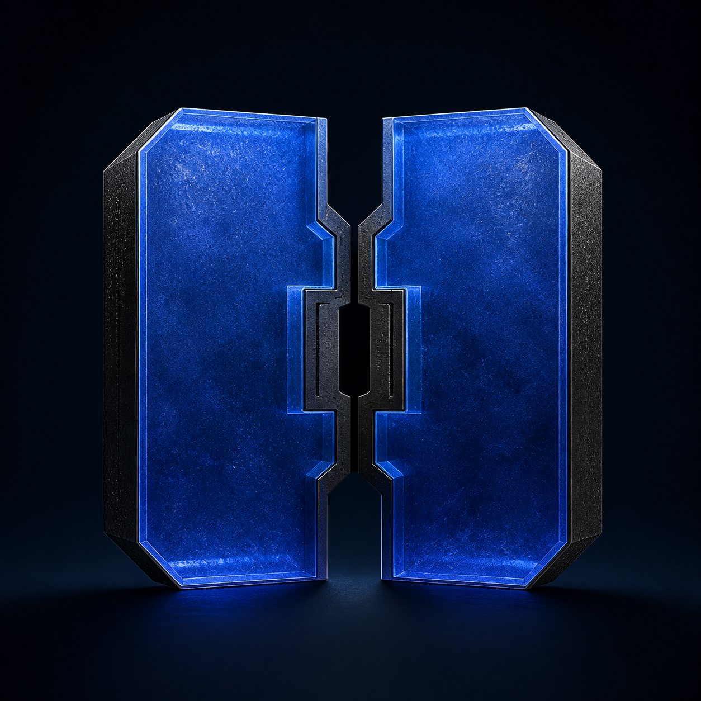
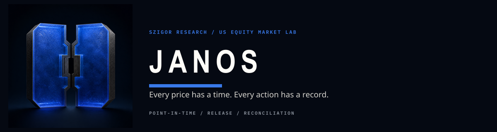

01Master identity
The proof standard

SYSTEM 01 / 2026
Szigor Research / Family visual system
One research standard. Two specialist market labs. Three identities with the same level of finish, clarity, and conviction.
Enter the system01 / The family
Every identity receives a complete logo suite, a proprietary image world, and a disciplined digital kit. Szigor defines the standard; LASZLO and JANOS apply it in their own markets.

The proof standard


The bounded signal


The time-aware ledger
02 / Material & form
Close crops, controlled light, dense blacks, and a single decisive accent create presence. Imagery carries the emotion; layout protects the evidence.
#070809#F1EEE7#D9553B#F3B52E#3979E8Editorial voiceLarge serif statements create calm authority and give the system room to breathe.
Operational voiceCompact sans-serif labels carry source, time, state, and asset information.
WordmarksAlways use the supplied artwork. Never typeset a brand name as a substitute logo.
03 / Brand architecture
Architecture is expressed through naming, language, and proximity—not by forcing three identities into a synthetic symbol.
Owns the method: inspectable evidence, explicit constraints, and recoverable state.
Applies the standard to on-chain events, risk gates, and execution state.
Applies the standard to point-in-time company evidence, portfolios, and reconciliation.
04 / GitHub asset kit
The same image-led export logic applies to all three identities. Use the prepared PNG kit so the material, mass, lighting, and brand color stay intact on every GitHub surface.
| Asset | Format | Size / use |
|---|---|---|
| Primary emblem | PNG | High-resolution image master |
| Avatar / mark | PNG | 512 × 512 / GitHub profile and UI |
| Organization banner | PNG | 1200 × 340 / profile header |
| Social preview | PNG | 1280 × 640 / repository sharing |
| Horizontal lockup | PNG | 1200 × 320 / documentation |
| Favicon | PNG | 16 × 16 + 32 × 32 / browser UI |
Naming pattern: {brand}-{asset}.{ext} · Lowercase · Hyphenated · No version labels in production filenames.
05 / Non-negotiables
Professionalism comes from consistency. These constraints keep each brand recognizable and the family relationship unambiguous.
Use the supplied emblem, avatar, or lockup. Never redraw, trace, stretch, outline, or add effects.
Never splice brand marks together or invent a fusion monogram. The relationship lives in the system, not inside a symbol.
Use one decisive key visual at a time. Do not replace branded imagery with decorative rails, diagrams, or generic line motifs.
Proof red belongs to Szigor, signal amber to LASZLO, and ledger blue to JANOS. Do not swap accents.
Keep clear space of at least one mark module on every side. Never place a logo against noisy, low-contrast detail.
Szigor is the master research identity; LASZLO and JANOS are peer research sub-brands. Equal craft does not mean interchangeable roles.